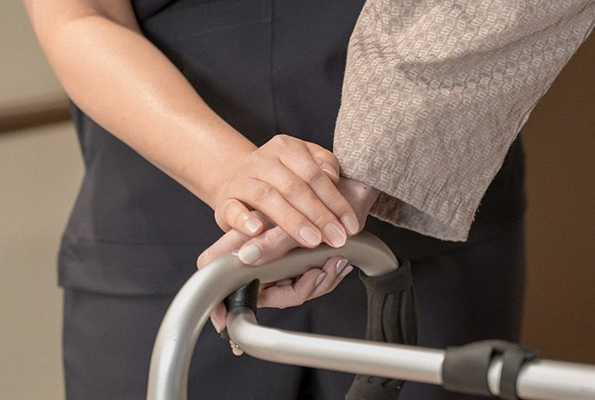
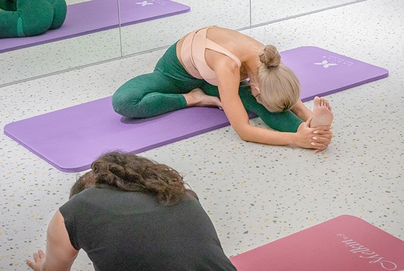
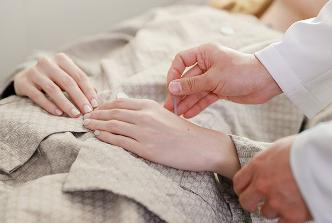
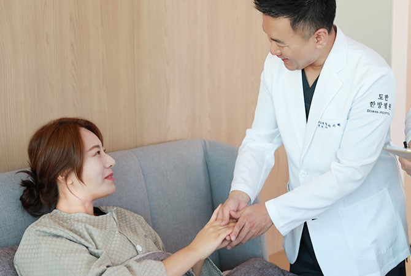

건강한 삶의 동반자 도반 한방병원입니다.
믿을 수 있는 치료, 도반한방병원이 약속 드립니다.
도반한방병원 센터 소개
도반한방병원은 한의학·의학 협진을 통해 체계적인 치료 프로그램들을 제공합니다.
도반의 약속
도반한방병원은 한의학·의학 협진을 통해 체계적인 치료 프로그램들을 제공합니다.
입원하여 치료하시는 동안 불편하지 않도록 각종 시설 구성에 심혈을 기울였습니다.
도반 한방병원은 환자의 치료를 최우선으로 생각하겠습니다.
환자의 작은 이야기에도 귀 기울이겠습니다.
환자분들을 임직원 모두의 소중한 가족이라고 생각하고 치료하겠습니다.
- 비수술 치료 집중
- 의학·한의학 협진
- 환자별 맞춤 치료
- 심리·재활 치료 시스템
도반 한방병원 치료의 특별함
도반 한방병원은 환자의 치료를 최우선으로 생각합니다.
-
센터별 드림팀 의료진의 양 한방 협진">1센터별 드림팀 의료진의 양·한방 협진
도반한방병원은 센터별로 비수술 치료 경험과 노하우가 축적된 의료진 드림팀을 구성했습니다. 도반 의료진 드림팀이 체계적인 양·한방 협진 시스템을 통해 환우 분들께 더 나은 치료 경험을 제공합니다.
-
2환자별, 질환별 맞춤 치료 프로그램 설계
도반한방병원은 치료 성과를 높이기 위해 질환별, 개인별 맞춤 치료 프로그램을 설계합니다. 특히 질환 진단에서부터 치료 후 관리에 이르기까지 다양한 치료의 단계를 세밀하게 구분하여 계획하기 때문에 치료 성과 상승을 기대할 수 있습니다.
-
3정서 및 재활 통합 치료
통합 치료는 질환 치료 뿐 아니라 재발 방지와 더불어 치료 이후의 삶까지 원활하도록 돕는 것입니다. 도반한방병원은 신체적 치료 뿐 아니라 심리, 재활 등 부차적인 부분까지 모두 고려하여 통합 치료를 제공합니다.
-
4체계적인 비수술 치료 구성
도반한방병원은 비수술 치료에 집중합니다. 의료진, 간호팀, 상담팀 등 환우와 마주하는 모든 임직원들 역시 함께 스터디를 하여 환자 분들께서 가장 필요한 치료가 무엇인지 고민하고 더 나은 비수술 치료 서비스를 제공해드릴 수 있도록 시스템을 개선합니다.
-
5다양한 치료 방법 연구
환자 삶의 질과 치료 성과 향상을 위해 양한방 치료 연구 뿐 아니라 스마트 한약 개발, 식단 연구 등 다양한 분야의 치료를 연구 개발합니다.